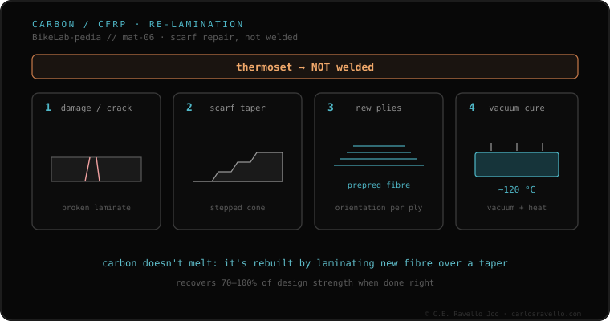

Carbon fiber isn't welded. It's a thermoset material: it doesn't melt to rejoin like a metal. What exists is a different repair, by re-lamination, done by a shop specialized in composites (not a welder): the damaged area is tapered into a cone or ramp (scarf), new fiber plies are laid up, and it's cured with heat and vacuum (~120 °C for prepreg). The literature reports 70%–100% recovery of design strength with a well-made scarf.
If your frame is carbon, the first thing that changes is who you take it to: this isn't a welder's business.
Metal is welded because it melts: heat brings it to liquid and, on cooling, the tubes are joined. Carbon doesn't play that way. It's a thermoset material — a cured resin matrix holding the fibers — and that means it doesn't melt to rejoin. No temperature "re-melts" it into a new joint. That's why saying "weld the carbon" is a category error: what this material accepts is something else.
That something else is re-lamination repair, and it's done by a shop specialized in composites, not a welder. The damaged area is tapered into a cone or ramp — the scarf — new fiber plies (prepreg or wet layup) are laid up, and it's cured with heat and vacuum, on the order of 120 °C for prepreg. The composites repair literature reports 70% to 100% recovery of design strength with a well-made scarf.

Carbon fits this cluster by contrast: against the metals that melt or join with filler — the logic of TIG, MIG and brazing — here there's no bead and no fusion. It also fits with how each material accumulates damage in use (fatigue by material) and with the questions worth asking before handing over the frame: the first one, in carbon, is whether whoever touches it is a composites shop or a welder.
If you're unsure about a damage or who should touch it, send us the case. Real diagnosis, nothing to sell you. Message us on WhatsApp
No. Carbon fiber is thermoset: it doesn't melt to rejoin like a metal. What exists is a different repair, by re-lamination, done by a shop specialized in composites, not a welder.
It's re-lamination: the damaged area is tapered into a cone or ramp (scarf), new fiber plies (prepreg or wet layup) are laid up, and it's cured with heat and vacuum, on the order of 120 °C for prepreg. The literature reports 70% to 100% recovery of design strength with a well-made scarf.
It's a warning sign. That patch ends up stiff, heavy and dangerous. The real repair is by scarf and is done by a composites shop, not a welder.